Full‑Auto
Full‑Auto
Full‑Auto
Full‑Auto
Full‑Auto
Full‑Auto
Full‑Auto
Full‑Auto
Full‑Auto
Full‑Auto
Full‑Auto
Full‑Auto
Full‑Auto
Full‑Auto
Full‑Auto
Full‑Auto
Full‑Auto
Full‑Auto
Full‑Auto
Full‑Auto
Full‑Auto
Full‑Auto

Full‑Auto
Full‑Auto

| Nazwa | Obrazek | Kaliber | Tryby strzelania | Szybkostrzelność | Opis |
|---|---|---|---|---|---|
| ADAR 2-15 | 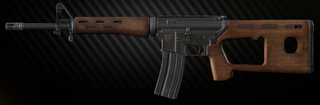 | 5.56x45mm NATO | Pojedynczy | 800 | Rosyjski cywilny karabinek ADAR 2-15 oparty jest na konstrukcji AR-15. Karabinek jest produkowany w St. Petersburgu przy użyciu izraelskich komponentów i chromowanych luf firmy „Molot Oruzhie”. |
| AK-101 | 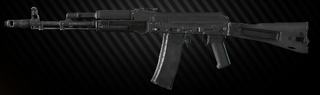 | 5.56x45mm NATO | Single Full‑Auto |
650 | Wersja eksportowa Kałasznikowa z nabojem 5,56 mm wyposażonym również w składaną na bok kolbę oraz boczne mocowanie do lunet optycznych i noktowizyjnych. |
| AK-102 | 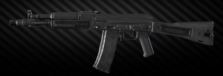 | 5.56x45mm NATO | Single Full‑Auto |
600 | Krótka, eksportowa wersja karabinu szturmowego Kalashnikov 5,56 mm wyposażonego w składaną na bok kolbę oraz boczne mocowanie do lunet optycznych i noktowizyjnych. |
| AK-103 | 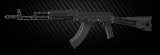 | 7.62x39mm | Single Full‑Auto |
600 | Karabin szturmowy Kalashnikov 7,62mm wyposażony w składaną na bok kolbę oraz boczne mocowanie do lunet optycznych i noktowizyjnych. |
| AK-104 | 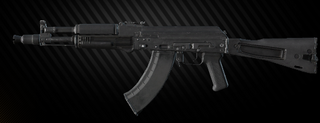 | 7.62x39mm | Single Full‑Auto |
600 | Krótki karabin szturmowy Kałasznikow 7,62 mm wyposażony w składaną na bok kolbę oraz boczne mocowanie do lunet optycznych i noktowizorów. |
| AK-105 | 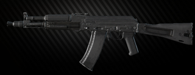 | 5.45x39mm | Single Full‑Auto |
600 | Krótki Kałasznikow 5,45 mm zmodernizowany karabin szturmowy wyposażony w składaną na bok kolbę oraz boczne mocowanie do lunet optycznych i noktowizyjnych. |
| AK-74 | 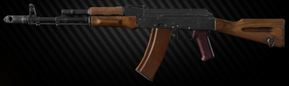 | 5.45x39mm | Single Full‑Auto |
650 | Karabin szturmowy Kałasznikow 5,45 mm, opracowany w 1970 roku przez М. Т. Kałasznikow, stał się dalszą ewolucją AKM ze względu na przyjęcie przez wojsko nowej amunicji 5,45x39. |
| AK-74M | 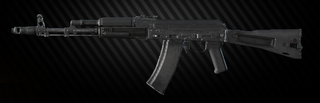 | 5.45x39mm | Single Full‑Auto |
650 | Kałasznikow 5,45 mm zmodernizowany karabin szturmowy wyposażony w składaną na bok kolbę oraz boczne mocowanie do lunet optycznych i noktowizyjnych. |
| AK-74N | 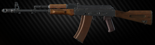 | 5.45x39mm | Single Full‑Auto |
650 | Karabin szturmowy Kałasznikow 5,45mm, opracowany w 1970 roku przez M. T. Kałasznikowa, stał się dalszą ewolucją AKM dzięki przyjęciu przez wojsko nowej amunicji 5,45x39. Kluczową różnicą konstrukcyjną w stosunku do standardowego AK-74 jest montaż boczny do lunet optycznych i nocnych. |
| AKM | 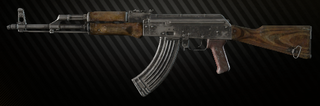 | 7.62x39mm | Single Full‑Auto |
600 | Zmodernizowany kałasznikow kal. 7,62 mm, przyjęty w 1959 r. w celu zastąpienia AK jako standardowej broni służbowej Armii Radzieckiej. Główne różnice w porównaniu z AK: zwiększony zakres celności, niższa waga, nowa kolba, spust, zwalniacz młota, kompensator wylotu i inne zmiany konstrukcyjne mające na celu poprawę skuteczności karabinu. |
| AKMN | 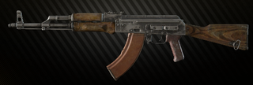 | 7.62x39mm | Single Full‑Auto |
600 | AKMN (z lunetą NSPUM-AKMN2) to system broni strzeleckiej składający się ze zmodyfikowanego AKM z mocowaniem na jaskółczy ogon do montażu lunet noktowizyjnych rodziny NSP - NSP-2/3 / 3A, NSPU, NSPUM. |
| AKMS | 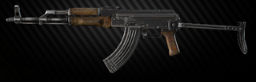 | 7.62x39mm | Single Full‑Auto |
600 | AKMS (indeks GRAU - 6P4) to wariant AKM ze składanym ramieniem (kolba). Składany do przodu w dół, pod łożem. Zaprojektowany specjalnie dla wojsk powietrznodesantowych. |
| AKMSN | 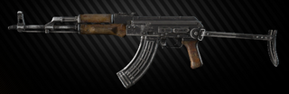 | 7.62x39mm | Single Full‑Auto |
600 | AKMSN - to zmodyfikowany AKMS z mocowaniem na jaskółczy ogon do montażu lunet z rodziny NSP - NSP-2/3 / 3A, NSPU, NSPUM. |
| AKS-74 | 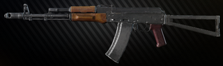 | 5.45x39mm | Single Full‑Auto |
650 | Karabin szturmowy Kałasznikow 5,45 mm wyposażony w składaną na bok metalową kolbę naramienną, przeznaczony głównie do użytku w piechocie szturmowej. |
| AKS-74N | 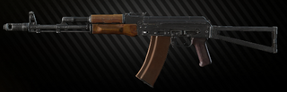 | 5.45x39mm | Single Full‑Auto |
650 | Karabin szturmowy Kałasznikow 5,45 mm wyposażony w składaną na bok metalową kolbę naramienną, przeznaczony głównie do użytku w piechocie szturmowej. Kluczową różnicą konstrukcyjną w stosunku do standardowego AKS-74 jest montaż boczny do lunet optycznych i nocnych. |
| AKS-74U | 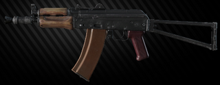 | 5.45x39mm | Single Full‑Auto |
650 | Zredukowana wersja karabinu szturmowego AKS-74, opracowana na początku lat 80. dla załóg pojazdów bojowych i wojsk powietrznodesantowych, również stała się bardzo popularna wśród organów ścigania i sił specjalnych ze względu na niewielkie rozmiary. |
| AKS-74UB | 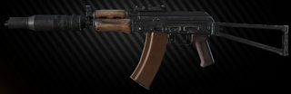 | 5.45x39mm | Single Full‑Auto |
650 | Specjalna wersja AKS-74U, modyfikacja B (cisza) jest standardowo wydawana z mocowaniem lunety typu jaskółczy ogon, urządzeniem tłumiącym i specjalnymi celownikami przeznaczonymi do strzelania amunicją poddźwiękową. |
| AKS-74UN | 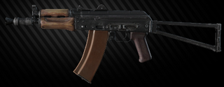 | 5.45x39mm | Single Full‑Auto |
650 | Zredukowana wersja karabinu szturmowego AKS-74, opracowana na początku lat 80. dla załóg pojazdów bojowych i wojsk powietrznodesantowych, również stała się bardzo popularna wśród organów ścigania i sił specjalnych ze względu na niewielkie rozmiary. Mod.N (night) jest wyposażony w mocowanie lunety typu jaskółczy ogon. |
| ASh-12 | 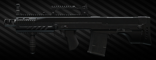 | 12.7x55mm STs-130 | Single Full‑Auto |
650 | Karabin bojowy ASh-12.7 (co oznacza „automatyczny karabin szturmowy, 12,7 mm”) to dedykowana broń CQB / Urban Operations, opracowana przez TsKIB SOO („Centralne Biuro Projektowe i Badawcze Broni Sportowej i Myśliwskiej”), spółka zależna KBP Instrument Design Bureau of Tula, Rosja, na wniosek rosyjskiej FSB (Federalnej Służby Bezpieczeństwa). Broń została zaprojektowana z myślą o ekstremalnej sile rażenia bliskiego zasięgu dla miejskich jednostek bojowych FSB. |
| AS VAL | 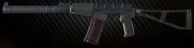 | 9x39mm | Single Full‑Auto |
900 | AS VAL (Avtomat Specialniy, Special Automatic Rifle) - karabin automatyczny z tłumikiem z wbudowanym tłumikiem przeznaczony dla jednostek specjalnych. Opracowany w TSNIITochMash na platformie VSS Vintorez. |
| DT MDR 5.56x45 | 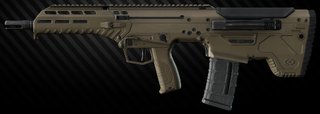 | 5.56x45mm NATO | Single Full‑Auto |
650 | The product of the US-based company Desert Tech LLC MDR rifle is a modular, multi-caliber weapon with compact bullpup layout. Barrel lengths and calibers can be changed by the end user within minutes with a minimum amount of tools. |
| DT MDR .308 | 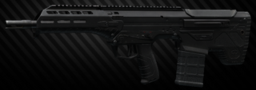 | 7.62x51mm NATO | Single Full‑Auto |
650 | The product of the US-based company Desert Tech LLC MDR rifle is a modular, multi-caliber weapon with compact bullpup layout. Barrel lengths and calibers can be changed by the end user within minutes with a minimum amount of tools. |
| HK 416A5 | ]]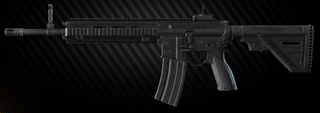 | 5.56x45mm NATO | Single Full‑Auto |
850 | HK416 A5 to dalszy rozwój karabinu szturmowego HK416 w kalibrze NATO 5,56 x 45 mm. Najbardziej uderzające zmiany w porównaniu z poprzednimi wersjami, a także dostępnymi na rynku platformami AR obejmują ulepszony i niewymagający narzędzi regulator gazu do stosowania tłumika, przeprojektowany, przyjazny dla użytkownika dolny odbiornik, który umożliwia pełną oburęczną obsługę broni i zapewnia optymalizację kompatybilność magazynka, a także liczne ulepszenia techniczne maksymalizujące bezpieczeństwo operatora, niezawodność, możliwości amunicji i trwałość w rzeczywistych warunkach pracy. |
| Kel-Tec RFB 7.62x51 | 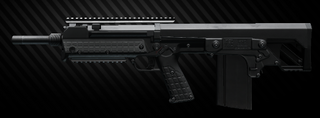 | 7.62x51mm NATO | Single | 700 | Kel-Tec RFB (Rifle, Forward-ejection, Bullpup) to półautomatyczny karabin typu bullpup o napędzie gazowym, wyprodukowany przez firmę Kel-Tec. |
| M4A1 |
|
5.56x45mm NATO | Single Full‑Auto |
800 | Colt M4A1 - karabin szturmowy (karabinek), zaprojektowany w USA na bazie platformy AR-15 na nabój 5,56x45 NATO. Został opracowany głównie do użytku przez operatorów pojazdów i straży pożarnej, którzy wymagali bardziej kompaktowej i lżejszej broni niż standardowy karabin pełnej długości, ale używali tego samego uzbrojenia. Jednak US SOCOM (United States Special Operations Command) wkrótce miało przyjąć M4A1 dla wszystkich podległych jednostek, po czym nastąpiło ogólne wprowadzenie M4A1 do służby w US Army i Marine Corps. |
| SA-58 | 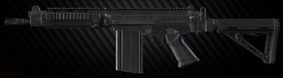 | 7.62x51mm NATO | Single Full‑Auto |
700 | SA-58 OSW (Operations Specialist Weapon) wyprodukowany przez amerykańską firmę DSA (David Selveggio Arms) jest legalną kopią FAL, jest wykonany na tym samym wyposażeniu linii produkcyjnej Steyr-Daimler-Puch, co StG-58. Może być wyposażony w inną długość lufy, dolną komorę zamkową ze stopu aluminium i ulepszone meble z nylonu wzmocnionego szkłem. Modele cywilne są półautomatyczne, ale klienci wojskowi i funkcjonariusze organów ścigania mogą zamawiać modele do wybierania ognia, które mają w pełni automatyczną częstotliwość cykliczną 750 strzałów na minutę. DSA-58 może używać dowolnych metrycznych magazynków FAL. |
| TX-15 DML |
|
5.56x45mm NATO | Single | 800 | Seria TX15 Designated Marksman Light (DML) wyznacza standardy dla półautomatycznych karabinów precyzyjnych o małej ramie. Wykorzystując doświadczenia zdobyte podczas opracowywania naszego uniwersalnego karabinka, DML jest zoptymalizowany do strzelania na średni dystans. |
| Vepr AKM/VPO-209 | 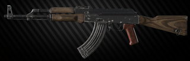 | .366 TKM | Single | 600 | VPO-209 został stworzony na platformie Klashnikov (AKM) i ma identyczny wygląd, wagę i wymiary. Mechanizm odpalania typu młotkowego zapewnia pojedyncze strzały i ustawia bezpiecznik na zablokowany. Amunicja jest zasilana przez odczepiany magazynek pudełkowy. |
| Vepr KM/VPO-136 | 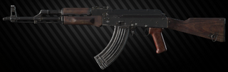 | 7.62x39mm | Single | 600 | Półautomatyczny karabinek myśliwski kal. 7,62x39 mm. Powstał na platformie Kałasznikowa (AKM) i ma identyczny wygląd, wagę i wymiary. Przeznaczona do profesjonalnego i amatorskiego polowania na średnią i grubą zwierzynę oraz do użytku sportowego. |
| Nazwa | Obrazek | Kaliber | Tryby strzelania | Szybkostrzelność | Opis |
|---|---|---|---|---|---|
| OP-SKS | 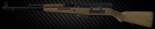 | 7.62x39mm | Single | 40 | Karabinek Molot OP-SKS przeznaczony jest do ładowania najpopularniejszą amunicją 7,62x39. Waga i wymiary sprawiają, że karabinek jest ergonomiczny dla strzelców w każdym wieku i wzrostu. Od ponad 50 lat jest używany do wszystkich rodzajów tradycyjnego rosyjskiego polowania. Testowany na drapieżnikach w Afryce, Azji Południowo-Wschodniej, Ameryce Środkowej i na Bliskim Wschodzie. |
| SKS | 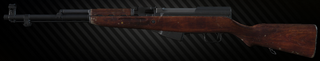 | 7.62x39mm | Single | 40 | Radziecki karabinek półautomatyczny zaprojektowany przez Siergieja Simonowa na nabój 7,62x39 i znany za granicą jako SKS-45. Niezwykle popularna zarówno w krajach WNP, jak i na Zachodzie, broń ta w niektórych krajach nadal znajduje się w czynnej służbie w postaci różnych kopii i modyfikacji. Ten konkretny egzemplarz pochodzi z rozbudowanych magazynów Fabryki Broni Tula i nie przeszedł jeszcze procedury normalizacji broni cywilnej. |
| Vepr Hunter/VPO-101 | 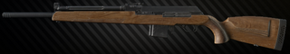 | 7.62x51mm NATO | Single | 600 | Półautomatyczny karabinek myśliwski kal. 7,62x51 mm. Powstał na platformie Kałasznikowa (AKM) i ma identyczny wygląd, wagę i wymiary. Przeznaczona do profesjonalnego i amatorskiego polowania na średnią i grubą zwierzynę oraz do użytku sportowego. |
| Nazwa | Obrazek | Kaliber | Tryby strzelania | Szybkostrzelność | Opis |
|---|---|---|---|---|---|
| RPK-16 | 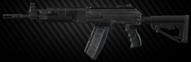 | 5.45x39mm | Single Full‑Auto |
650 | Najnowszy rosyjski lekki karabin maszynowy - RPK-16 z nabojem 5,45x39mm. Kluczowe cechy tego rodzaju broni to - szybko odłączane lufy, ulepszona ergonomia, szyny tkackie na łożu oraz osłona przeciwpyłowa. |
| Nazwa | Obrazek | Kaliber | Tryby strzelania | Szybkostrzelność | Opis |
|---|---|---|---|---|---|
| MP5 | 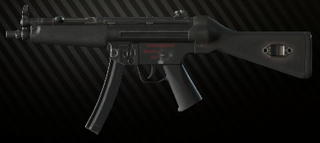 | 9x19mm Parabellum | Single 3‑round Burst Full‑Auto |
800 | Pistolet maszynowy HK MP5 9x19 z mechanizmem strzelającym Navy 3 Round Burst, który ma odcięcie na trzy naboje. Powszechnie uznany model pistoletu maszynowego, znanego przede wszystkim jako broń GSG9 i podobnych sił świata, a także znany z częstego pojawiania się w filmach i grach wideo. |
| MP5K-N | 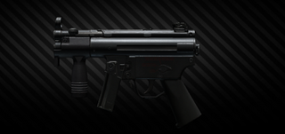 | 9x19mm Parabellum | Single 3‑round Burst Full‑Auto |
900 | HK MP5K (K od niemieckiego Kurz - „krótki”) to krótsza wersja MP5, która została zaprojektowana do walki w zwarciu przez tajne operacje i służby specjalne. |
| MP7A1 | 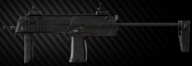 | 4.6x30mm HK | Single Full‑Auto |
950 | MP7 jest niezwykle kompaktowy, lekki, może być używany w bardzo ograniczonych przestrzeniach i praktycznie nie ma odrzutu. Można go nosić w sposób ciągły, co czyni go idealną bronią osobistą dla dzisiejszego żołnierza. Ci, którzy go noszą, będą odpowiednio uzbrojeni do najszerszego zakresu operacji. |
| MP7A2 | 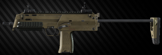 | 4.6x30mm HK | Single Full‑Auto |
950 | MP7A2 to kolejna modyfikacja MP7A1. Kluczową cechą tego pistoletu maszynowego jest zastąpienie standardowego chwytu składanego szyną „picatinny”. |
| MP9 | 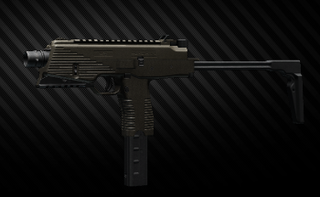 | 9x19mm Parabellum | Single Full‑Auto |
900 | Brügger Thomet MP9 (Maschinenpistole 9 mm, niem. Pistolet maszynowy) to pistolet maszynowy kalibru 9 × 19 mm Parabellum o selektywnym ogniu, zaprojektowany i wyprodukowany przez Brügger Thomet ze Szwajcarii. |
| MP9-N | 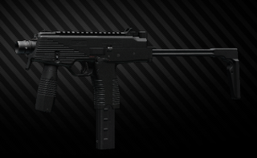 | 9x19mm Parabellum | Single Full‑Auto |
1100 | MP9-N to kolejna modyfikacja pistoletu maszynowego MP-9, która została dopracowana i zoptymalizowana we współpracy ze specjalnymi jednostkami policji i wojska. MP9-N jest obecnie w służbie z bliskimi zespołami ochrony, a także zespołami SWAT na całym świecie. Jest to również doskonały wybór jako broń obrony osobistej (PDW). |
| MPX | 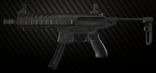 | 9x19mm Parabellum | Single Full‑Auto |
850 | SIG MPX może pochwalić się bezprecedensową szybkością działania w znanej obudowie platformy AR. Tłok gazowy o krótkim skoku umożliwia SIG MPX użycie pełnego zakresu amunicji 9mm bez żadnych regulacji zaworu gazowego. Pełnowymiarowy montaż zapewnia możliwość instalacji szerokiej gamy lunet i przyrządów celowniczych. |
| P90 | 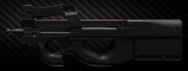 | 5.7x28mm FN | Single Full‑Auto |
900 | FN P90, znany również jako FN Project 1990, to kompaktowa broń obrony osobistej (PDW) zaprojektowana i wyprodukowana przez FN Herstal w Belgii. Stworzony w odpowiedzi na prośby NATO o wymianę broni palnej 9 × 19 mm Parabellum, P90 został zaprojektowany jako kompaktowa, ale potężna broń dla załóg pojazdów, operatorów broni obsługiwanej przez załogę, personelu pomocniczego, sił specjalnych i grup antyterrorystycznych. |
| PP-19-01 Vityaz-SN | 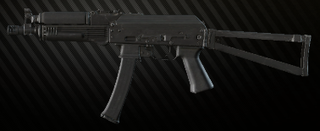 | 9x19mm Parabellum | Single Full‑Auto |
700 | Rosyjski pistolet maszynowy oparty na konstrukcji AKS-74U. Standardowy problem dla wielu organów ścigania i jednostek wojskowych Federacji Rosyjskiej. |
| PP-9 "Klin" | 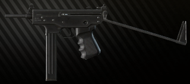 | 9x18mm Makarov | Single Full‑Auto |
1000 | Dalsza ewolucja pistoletu maszynowego Kedr SMG dla nowego wkładu 9x18 PMM, oznaczonego jako PP-9 Klin. Jest produkowany od 1996 do 2002 roku na zlecenie Ministerstwa Spraw Wewnętrznych. |
| PP-91 "Kedr" | 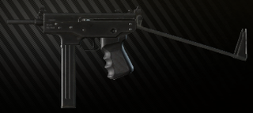 | 9x18mm Makarov | Single Full‑Auto |
900 | PP-91 Kedr SMG został opracowany na początku lat 90-tych na zlecenie Ministerstwa Spraw Wewnętrznych i jest obecnie produkowany w fabryce maszyn Ziatoust (Zlatoustovvskiy Mashinostroitelnyl Zavod ZMZ). W tej chwili jest to broń służbowa prawie wszystkich rosyjskich sił porządkowych. |
| PP-91-01 "Kedr-B" | 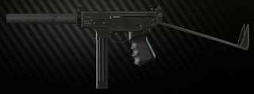 | 9x18mm Makarov | Single Full‑Auto |
900 | Rzadka wersja PP-91 Kedr SMG z tłumikiem, oznaczona jako PP-91-01 Kedr-B. |
| PPSH-41 | 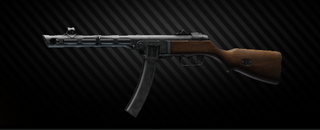 | 7.62x25mm Tokarev | Single Full‑Auto |
1000 | PPSz-41 to radziecki pistolet maszynowy zaprojektowany przez Georgija Szpagina jako tania, niezawodna i uproszczona alternatywa dla PPD-40. |
| Saiga-9 | 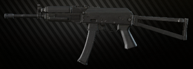 | 9x19mm Parabellum | Single | 650 | Półautomatyczny karabinek Saiga-9 został opracowany jako wariant PP-19-01 Vityaz-SN na rynek cywilny i przeznaczony do celów strzeleckich i sportowych. |
| Nazwa | Obrazek | Kaliber | Tryby strzelania | Szybkostrzelność | Opis |
|---|---|---|---|---|---|
| 590A1 | 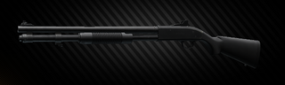 | 12x70mm | Single (Pump action) |
30 | Seria Mossberg 500 to jedna z najbardziej znanych i rozpowszechnionych strzelb typu pump action na świecie. Chroni trawnik przed domem od 1961 roku. |
| M870 | 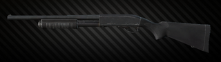 | 12x70mm | Single (Pump action) |
30 | Remington Model 870 to strzelba z pompką wyprodukowana przez Remington Arms Company, LLC. Jest szeroko stosowany przez społeczeństwo do strzelectwa sportowego, polowań i samoobrony oraz przez organy ścigania i organizacje wojskowe na całym świecie. |
| MP-133 | 12x70mm | Single (Pump action) |
30 | Wielostrzałowa, gładkolufowa strzelba MP-133 firmy IzhMekh. Niezawodna i praktyczna broń myśliwska i samoobrony. Uważany za wyjątkowy w swojej klasie dzięki ogranicznikowi slajdów. | |
| MP-153 | 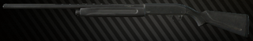 | 12x70mm | Single | 40 | Multi-shot z gładkim otworem. Strzelba MP-153, wyprodukowana przez Izhmekha. Niezawodna i praktyczna broń myśliwska i samoobrony. |
| Saiga-12 | 12x70mm | Single | 40 | Półautomatyczna strzelba 12ga ze składaną kolbą i blokadą bezpieczeństwa mechanizmu spustowego, która umożliwia strzelanie tylko z pozycji wysuniętej kolby. Zawiera krótką lufę 430mm. | |
| TOZ-106 | 20x70mm | Single (Bolt action) |
30 | Jednolufowa strzelba myśliwska 20ga z przesuwanym zamkiem. Powszechnie znana pod swą potoczną nazwą Śmierć Przewodniczącego ze względu na niewielkie rozmiary. | |
| KS-23M | 23x75mm | Single (Pump action) |
30 | KS-23 to rosyjska strzelba, choć ze względu na karabinek został oficjalnie oznaczony przez rosyjskie wojsko jako karabinek. KS oznacza Karabin Spetsialniy, „Special Carbine”. Jest znany ze swojego dużego kalibru, strzelającego pociskiem 23mm, co odpowiada 6,27 przy użyciu brytyjskich i amerykańskich standardów manometrów strzelbowych i około 4 przy użyciu obecnych norm europejskich (opartych na metrycznych tabelach CIP), dzięki czemu największa strzelba w użyciu obecnie. |
| Nazwa | Obrazek | Kaliber | Tryby strzelania | Szybkostrzelność | Opis |
|---|---|---|---|---|---|
| M1A | 7.62x51mm NATO | Single | 700 | Springfield Armoury M1A to cywilna wersja karabinu M14 zaprojektowana i wyprodukowana przez Springfield Armory, Inc. | |
| RSASS |
|
7.62x51mm NATO | Single | 700 | Półautomatyczny system snajperski Remington jest kulminacją wspólnych wysiłków Remington Arms i JP Enterprises w celu opracowania wysoce celnego i znakomicie skonstruowanego karabinu snajperskiego o szybkiej strzelaniu. Ta broń zapewnia dokładność poniżej MOA do 800 metrów i dalej, zapewniając jednocześnie taktyczną przewagę półautomatycznej platformy. |
| SR-25 | 7.62x51mm NATO | Single | 700 | Karabin precyzyjny SR-25 to najnowsza ewolucja precyzyjnego półautomatycznego karabinu NATO 7,62 mm. Oburęczne zwolnienie zamka, selektor i zwalnianie magazynka oferuje leworęcznemu użytkownikowi ergonomiczne zalety nieodłącznie związane z elementami sterującymi opartymi na AR15, a także zapewnia praworęcznym użytkownikom alternatywne metody manipulacji w celu zwiększenia wydajności ruchu. 2-stopniowy spust służy jako pomoc w precyzyjnym celowaniu z dużej odległości. System śruby i gazu E2 zapewnia doskonałą niezawodność działania, niezależnie od tego, czy jest tłumiony, czy nie. | |
| SVDS | 7.62x54mmR | Single | 700 | Karabin wyborowy Dragunov ze składaną kolbą - wariant SVDS. Został specjalnie zaprojektowany dla rosyjskich spadochroniarzy i jednostek sił specjalnych. | |
| VSS Vintorez | 9x39mm | Single Full‑Auto |
900 | VSS (Vintovka Sniperskaya, Special Sniper Rifle) - karabin snajperski z tłumikiem z integralnym tłumikiem, zaprojektowany w latach 80-tych w Instytucie TSNIITochMash na potrzeby zespołów specjalnego przeznaczenia i sił zadaniowych. |
| Nazwa | Obrazek | Kaliber | Tryby strzelania | Szybkostrzelność | Opis |
|---|---|---|---|---|---|
| DVL-10 | 7.62x51mm NATO | Single (Bolt Action) |
30 | DVL-10 to lekki, kompaktowy i wyciszony karabin w opatentowanych i aktualnych wojskowych kalibrach poddźwiękowych, który został opracowany do specjalnych misji służbowych i bojowych, gdzie wymagana jest wyjątkowa celność i zasięg. Wyposażony w standardową składaną kolbę Lobaev i lufę ze stali nierdzewnej Lobaev Hummer Barrels. | |
| M700 | 7.62x51mm NATO | Single (Bolt Action) |
30 | Remington Model 700 to seria karabinów powtarzalnych centralnego zapłonu produkowanych przez Remington Arms od 1962 roku. | |
| Mosin | 7.62x54mmR | Single (Bolt Action) |
30 | Mosin Nagant M91 / 30 PU to snajperska odmiana słynnego rosyjskiego karabinu, który był powszechnie używany przez rosyjskich snajperów podczas drugiej wojny światowej. | |
| Mosin Inf. | 7.62x54mmR | Single (Bolt Action) |
30 | Mosin–Nagant to słynny rosyjski karabin, który był powszechnie używany podczas drugiej wojny światowej. | |
| SV-98 | 7.62x54mmR | Single (Bolt Action) |
30 | SV-98 to rosyjski karabin snajperski opracowany w latach 1998-2000 przez grupę inżynierów uzbrojenia pod dowództwem W. Stronskly'ego. Produkowany seryjnie przez grupę IzhMash. Jest to karabin powtarzalny zasilany magazynkiem, przeznaczony do walki z personelem wojskowym na dystansie do 1000 m. | |
| T-5000 | 7.62x51mm NATO | Single (Bolt Action) |
30 | Bardzo celny karabin ORSIS T-5000 to znakomity efekt starań konstruktorów naszej firmy. Model ten powstał we współpracy z profesjonalnymi strzelcami i posiada właściwości wymagane dla klienta na rynku rosyjskim. Model T-5000 to przeładowywany ręcznie repetytor z przesuwanym zamkiem i dwoma przednimi występami blokującymi. Jest to broń uniwersalna. Jego specyfikacje zapewniają wysoką celność strzałów z dużej odległości (do 1500m), wysoki poziom wygody strzelca podczas faz przygotowawczych, strzelania i odrzutu, szybkie przywracanie linii celowniczej, doskonałą niezawodność i ergonomię. | |
| VPO-215 | .366 TKM | Single (Bolt Action) |
30 | VPO-215 to rosyjski karabin powtarzalny przeznaczony do polowań. |
| Nazwa | Obrazek | Kaliber | Tryby strzelania | Szybkostrzelność | Opis |
|---|---|---|---|---|---|
| FN GL40 | 40x46 mm | Single | 30 | Samodzielny montaż kolby z dołączonym granatnikiem FN GL40 Mk.2. Został zaprojektowany do użycia pełnej gamy standardowych granatów NATO 40 mm. |
| Nazwa | Obrazek | Kaliber | Tryby strzelania | Szybkostrzelność | Opis |
|---|---|---|---|---|---|
| APB | 9x18mm Makarov | Single Full‑Auto |
750 | Wersja wyciszona pistoletu automatycznego Stechkin. Szeroko stosowany przez różne rosyjskie siły specjalne. | |
| APS | 9x18mm Makarov | Single Full‑Auto |
750 | Automatyczny pistolet Stechkin lub SOA to radziecki pistolet maszynowy do selektywnego ognia. Nosi imię jego twórcy, Igora Stechkina. | |
| FN 5-7 | 5.7x28mm FN | Single | 30 | FN Five-seven, oznaczony znakiem towarowym Five-seveN, to półautomatyczny pistolet zaprojektowany i wyprodukowany przez FN Herstal w Belgii. Jest w czarnej i płaskiej ciemnej ziemi. | |
| GLOCK17 | 9x19mm Parabellum | Single | 30 | Glock 17 to austriacki pistolet zaprojektowany przez firmę Glock na potrzeby armii austriackiej. Dzięki swoim imponującym właściwościom bojowym i niezawodności zyskał szerokie uznanie i popularność również jako broń policyjna, strzelecka i cywilna samoobrony. | |
| GLOCK18C | 
|
9x19mm Parabellum | Single Full‑Auto |
1200 | Glock 18 to wariant pistoletu Glock 17 z selektywnym strzelaniem. Broń jest zwykle używana z przedłużonym magazynkiem o pojemności 33 nabojów, chociaż można użyć innych magazynków z Glock 17, o dostępnych pojemnościach 10, 17 lub 19 rundy. Ma otwór od klucza wycięty w przedniej części zamka, podobnie jak otwór w modelach Glock z długim zamkiem, chociaż Glock 18 ma prowadnicę o standardowej długości. Otwór na dziurkę od klucza zapewnia obszar umożliwiający cztery, stopniowo większe (od tyłu do przodu) nacięcia kompensatora wykonane w lufie w celu odprowadzenia gazów pędnych w górę, zapewniając większą kontrolę nad szybkostrzelnym pistoletem maszynowym. |
| M1911A1 | .45 ACP | Single | 30 | Powszechnie znany po prostu jako „Colt”, M1911 jest jednym z najbardziej znanych pistoletów na planecie. Przeszedł obie wojny światowej jako standardowy pistolet armii amerykańskiej i pomimo tego, że został wymieniony w 1986 roku, jego dalsze odmiany są nadal wybierane jako broń boczna w różnych amerykańskich siłach specjalnych. M1911A1 to kolejna generacja pistoletu M1911, po I wojnie światowej wojskowy model 1911 przeszedł różne zmiany, w tym krótszy spust z nacięciami w ramie, ulepszone celowniki, łukowatą obudowę sprężyny głównej i przeprojektowane bezpieczeństwo chwytu. | |
| M45A1 | .45 ACP | Single | 30 | Pistolet MEU (SOC), („Marine Expeditionary Unit”; „Special Operations Capable”), oficjalnie nazwany M45 MEUSOC, jest półautomatycznym pistoletem zasilanym z magazynka, jednostronnego działania, z pojemnikiem na nabój .45 ACP. Jest to wariant M1911 i jest standardowym ramieniem bocznym dla Force Recon Element Marine Expeditionary Units piechoty morskiej Stanów Zjednoczonych od 1985 roku. Ulepszony M45A1 zawiera kilka zmian w oryginalnym projekcie M1911A1. Jedną z cech jest podwójny system sprężyn odrzutu, który rozkłada siłę odrzutu pocisku .45 ACP, zmniejszając maksymalną siłę impulsu odrzutu. Ma również 3-punktowe celowniki nocne z trytem, 5-calową lufę na mecze narodowe, oburęczne zabezpieczenie, szynę Picatinny i pustynne wykończenie Cerakote. | |
| M9A3 | 9x19mm Parabellum | Single | 30 | Beretta M9A3 to najnowsza modyfikacja pistoletów serii M9, przeznaczona dla wojska i policji, a także do sportu i obrony domowej. Główne cechy generacji A3 to ulepszona ergonomia i trwalsza powłoka FDE. | |
| MP-443 "Grach" | 9x19mm Parabellum | Single | 30 | Wyprodukowany w Rosji półautomatyczny pistolet 9x19, broń służbowa rosyjskiej armii, sił specjalnych Ministerstwa Spraw Wewnętrznych i innych służb obronnych i organów ścigania. | |
| P226R | 9x19mm Parabellum | Single | 30 | SIG Sauer P226R to pełnowymiarowy pistolet serwisowy produkcji SIG Sauer, standardowa broń służbowa Navy SEALs. Komora na 9x19mm Parabellum, posiada mocowanie na szynę Picatinny na spodniej stronie ramy. | |
| PB pistol | 9x18mm Makarov | Single | 30 | Pistolet z tłumikiem PB (indeks GRAU 6П9) został zaprojektowany na potrzeby wojskowych grup rozpoznawczych i personelu KGB ZSRR i został wprowadzony do służby w 1967 roku. Do dziś eksploatowany jest przez siły specjalne FSB i oddziały wewnętrzne MSW. | |
| PM (t) pistol | 9x18mm Makarov | Single | 30 | Pół-mityczny PM z przedłużoną lufą i gwintem mocowania tłumika. Niektórzy twierdzą, że była to limitowana seria wyprodukowana w Bułgarii, inni nalegają na DDR, a niektórzy nawet myślą o tym jako o ręcznie robionym ulepszeniu. Jak to się skończyło w rejonie Norwińska, żadna żywa dusza nie może powiedzieć. | |
| PM pistol | 9x18mm Makarov | Single | 30 | Sprawdzony PM. Ze względu na wszechobecne rozpowszechnienie zarówno pistoletu, jak i amunicji, jest nadal używany przez rosyjski Spetznaz, dzięki wyjątkowej niezawodności, niewielkiej wadze i kompaktowym rozmiarom. Jedyną poważną wadą jest brak mocy powalającej. | |
| SR-1MP Gyurza | 9x21mm Gyurza | Single | 30 | Półautomatyczny pistolet Serdiukow - znany również jako SPS i Gyurza („Viper”), indeks GRAU 6P53. Pistolet zaprojektowany przez P. Sierdiukowa i I. Belyaeva do celów specjalnych Federacji Rosyjskiej na nabój 9x21 mm. | |
| TT pistol | 7.62x25mm Tokarev | Single | 30 | Legendarny pistolet. Był świadkiem licznych konfliktów zbrojnych i nadal służy w niektórych miejscach naszej planety, w takiej czy innej modyfikacji. To klasyczny TT-33, najbardziej masowo produkowana wersja. Wyposażony jest w system przechylania lufy Browninga z krótkim odrzutem, ale poza tym jest zupełnie inny - celowo prosty, jednostronnego działania, nie ma żadnych środków bezpieczeństwa, z wyjątkiem wycięcia typu half-cock, jest w stanie wytrzymać straszne nadużycia operacyjne. Dzięki potężnemu nabójowi 7,62x25 i stosunkowo długiej lufie TT może pochwalić się dużą prędkością wylotową, penetracją i imponującą celnością, nawet na długich dystansach. | |
| TT pistol (gold) | 
|
7.62x25mm Tokarev | Single | 30 | Legendarny pistolet. Był świadkiem licznych konfliktów zbrojnych i nadal służy w niektórych miejscach naszej planety, w takiej czy innej modyfikacji. To klasyczny TT-33, najbardziej masowo produkowana wersja. Wyposażony jest w system przechylania lufy Browninga z krótkim odrzutem, ale poza tym jest zupełnie inny - celowo prosty, jednostronnego działania, nie ma żadnych środków bezpieczeństwa, z wyjątkiem wycięcia typu half-cock, jest w stanie wytrzymać straszne nadużycia operacyjne. Dzięki potężnemu nabójowi 7,62x25 i stosunkowo długiej lufie TT może pochwalić się dużą prędkością wylotową, penetracją i imponującą celnością, nawet na długich dystansach. Specjalna edycja złota. |